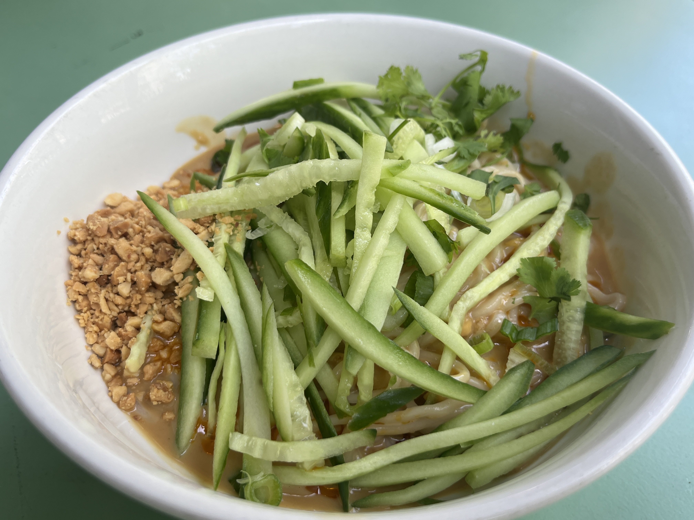

マンガ盛り、上等。
運河駅前、理科大生も唸る町中華。
ご飯を大盛りにすると、その名も"マンガ盛り"。 カウンター越しの活気と、しっかりめの味付けで、今日もお客さんを迎えています。
新華楼、3つの強み
ご飯もマンガ盛り
並盛りでも、他店の大盛りレベル。 そこからさらに大盛りにすると、お客様が思わず"マンガ盛り"と呼んだボリュームになります。 焼肉定食は+100円でおかずも大盛りにできます。育ち盛りの学生さんにも人気です。
理科大生も常連、カウンターの活気
運河駅前という立地もあり、理科大生に人気のお店です。 カウンター越しに、お店の人もお客さんも活気があると評判。 一人でふらっと立ち寄っても、賑やかな雰囲気に迎えてもらえます。
しっかりめの味付け+豊富な卓上調味料
カレーチャーハンは香りだけでなく、しっかりカレー味。 醤油ラーメンも味噌ラーメンも、それぞれに味を追い込んだ一杯です。 卓上にはマヨネーズなど調味料が豊富に揃い、味変しながら最後まで飽きずに楽しめます。
お客様の声に登場する人気メニュー
公式サイトもSNSもない新華楼ですが、実際にご来店いただいたお客様から、こんな声が届いています。 量、味付け、揚げ具合——お客様の言葉でしか伝わらない魅力を、そのままご紹介します。
※価格はお客様の口コミに登場した参考価格です。現在の価格とは異なる場合があります。
お客様の声
かなり昔からあるが1度も行った事がなくつい最近実家に帰った時に思い切って行ってから 何故、学生時代こんなに美味しい店に 行かなかったのか、、 後悔しました。 私は焼肉定食がおすすめ。実家に帰るたびに食べたくて行き始めました。 先日行ったら しれっと値上げしてた(笑) 美味しいし量も多いし値上げはまったく気にならず。もともと安いし末永く頑張ってもらいたいです。たまにしか行けませんが応援してます。 snsとかで常に情報がわかれば嬉しいですね。 実家に帰る楽しみが一つ増えました^ ^
ご来店のお客様
東武アーバンパークラインの運河駅降りてすぐの町中華。席はカウンターのみ。理科大生御用達の店らしくボリューミー。ご飯並盛りも普通の店の大盛りレベルで大盛りにすると"マンガ盛り"です。焼肉定食のみ＋100円でおかずの大盛りができます。マヨネーズなど豊富な卓上調味料で飽きずに食べられます。途中下車しても行きたい流山の町中華です。
ご来店のお客様
4/11（金）22時過ぎに久々に訪問 職場の歓送迎会からの帰宅時に駅を降りてタクシーに乗るつもりが暖簾を潜って入店 チャーシューメンをいただく 美味い🍜 これだよね、これが町中華の味 息子にカレーチャーハンをテイクアウトして退店、匂いに釣られて自宅で一口、これも美味い😋 週末、呑んだ後の〆に入店。 レバニラ定食を注文。ご飯は少なめで。 それでも他店では大盛りの量。 瓶ビールで一杯飲りながら美味しく完食。 ほんのり甘めのレバー、シャキシャキのモヤシ！旨し！ 次回は焼肉定食かな？ 周りの理科大生らしき学生さんは、ダブルカツを頼んでる人が多かったですよ。
ご来店のお客様
運河駅前、すぐの町中華
千葉県流山市東深井406 蓮見第1ビルにて営業しています。 東武アーバンパークライン「運河」駅からのアクセスについて、 お客様の口コミでも「運河駅降りてすぐ」との声をいただいています。
運河駅前
PHOTO SAMPLE(フリー素材によるイメージ写真)
